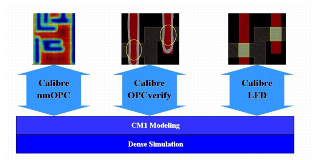

The Compact
Model 1 (CM1) resist model has been specifically developed for use
with Calibre nmOPC. The Calibre nmOPC tool takes advantage of the
data available for resist simulation with a dense simulation engine.
CM1 modeling also works seamlessly
with Calibre® OPCverify™ and Calibre® LFD™. For more information
on CM1 modeling, see the Calibre WORKbench User’s and Reference Manual.
Figure 1. CM1 Modeling With Calibre nmOPC,
Calibre OPCverify, and Calibre LFD